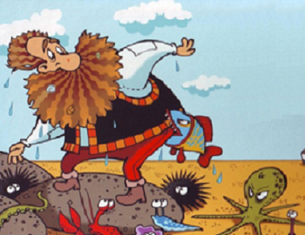

Szadista gyermekdalok
A gyermekek óvodai, iskolai illetve családi körben többféle zenei stílust is hallanak, és sokszor nem a legértékesebbek közül. Fogékonyságuknak, kíváncsiságuknak köszönhetően megszeretnek és meg is tanul bármilyen dallamot. A magyar népzenében számtalan olyan gyermekdal, mondóka, kiszámoló létezik, melyek szövege és képi világa meglehetősen sötét, néha egyenesen morbid. Gyermeki fejjel ezek sokszor fel sem tűnnek, nem tulajdonítunk nekik jelentőséget, nem látunk bennük kivetnivalót. Az ember hosszú évekig énekelgethetni kedvenc gyerekkori rigmusait, és talán soha nem is tudatosul benne, milyen szörnyűségekről énekel.

|

|
 |
|
Boci, boci tarka, Se füle, se farka, Oda megyünk lakni, Ahol tejet kapni. Boci, boci megfázott, Varrtam neki nadrágot, Nem akarta felvenni, Ágyba kellett fektetni. |
Katalinka szállj el, jönnek a törökök, sós kútba tesznek, onnan is kivesznek. Kerék alá tesznek, onnan is kivesznek. Imhol jönnek a törökök, mindjárt agyonlőnek! |
Egyszer volt egy ember, Szakálla volt kender. Meggyulladt a kender, Elszaladt az ember. Közel volt a tenger, Belefúlt az ember! |

|

|

|
|
Csiga-biga, gyere ki! Ég a házad ideki. Kapsz tejet, vajat, holnapra is marad. |
Süss fel nap, fényes nap, kertek alatt a ludaink megfagynak. |
Sírás-nevetés! Hónap lesz a temetés. |